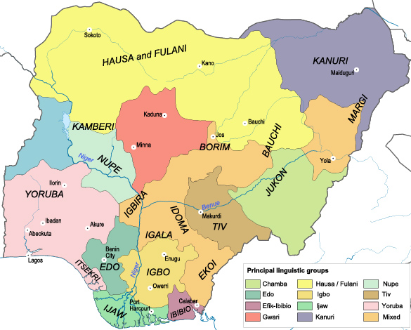

| 203 293 391 | População atual |
|---|---|
| 102 943 220 | População masculina atual (50.6%) |
| 100 350 171 | População feminina atual (49.4%) |
| 5 271 819 | Nascidos neste ano |
| 19 148 | Nascidos hoje |
| 1 738 092 | Mortes este ano |
| 6 313 | Mortes hoje |
| -45 774 | Migração líquida este ano |
| -166 | Migração líquida hoje |
| 3 487 954 | Crescimento da população este ano |
| 12 669 | Crescimento da população hoje |
Taxa de mortalidade: 12,7 mortes/1.000 habitantes
Taxa de mortalidade infantil: total: 71,2 mortes/1.000 nascimentos
homens: 76 mortes/1.000 nascimentos
mulheres: 66,2 mortes/1.000 nascimentos
Nigéria, oficialmente República Federal da Nigéria (em inglês: Federal Republic of Nigeria), é uma república constitucional federal que compreende 36 estados e o Território da Capital Federal. O país está localizado na África Ocidental e compartilha fronteiras terrestres com a República do Benim a oeste; com Chade e Camarões a leste e com o Níger ao norte. Sua costa encontra-se ao sul, no Golfo da Guiné, no Oceano Atlântico.
| Pais | Taxa de alfabetização(total) | Alfabetização Masculina | Alfabetização Feminina |
| Nigéria | 61.3% | 72.1% | 50.4% |